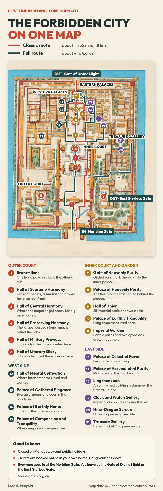

Forbidden City · map
Forbidden City map: two routes and 21 spots
Last checked:
This is the whole Forbidden City on one hand-drawn map. It shows two walking routes, the way in and the two ways out, and 21 numbered spots. Tap the map to open the full-size version, then zoom in on your phone.

Which route should I take?
The Classic route (red) walks straight up the middle: about 1 hour 35 minutes and 1.8 km. It takes in spots 1 to 4 and 7 to 11, from the bronze lions to the Imperial Garden, and leaves by the Gate of Divine Might. Take this one if you have a morning, or if it is your first visit.
The Full route (dark green) is about 4 hours and 4.6 km. It follows the same line through the big halls, then loops through the western palaces where later emperors lived and the eastern palaces with their courtyards, and heads for the Treasure Gallery in the northeast. The Clock and Watch Gallery and the Treasure Gallery each need their own small ticket on top of entry.
Both times are walking at an easy pace plus about 10 minutes at each stop. Queues, crowds and the extra galleries add more. For the stop-by-stop version of the shorter walk, see the Forbidden City in half a day.
Where do I go in and out?
- In: everyone enters at the Meridian Gate, at the south end. See how to get to it.
- Out: the Gate of Divine Might at the north end, across the road from Jingshan Park, or the East Glorious Gate on the east side, about 800 m from Wangfujing.
- The palace is closed on Mondays, except public holidays. Tickets are booked online in your own name, and your passport is your ticket. See how to book.
What are the 21 spots?
Outer court
- Bronze lions. One has a paw on a ball, the other a cub.
- Hall of Supreme Harmony. Ten roof beasts, a sundial and bronze tortoises out front.
- Hall of Central Harmony. Where the emperor got ready for big ceremonies.
- Hall of Preserving Harmony. The largest carved stone ramp is round the back.
- Hall of Military Prowess. Famous for the books printed here. Closed since 19 October 2026 for repairs.
- Hall of Literary Glory. Scholars lectured the emperor here.
Inner court and garden
- Gate of Heavenly Purity. Gilded lions mark the way into the inner palace.
- Palace of Heavenly Purity. The heir's name was sealed behind the plaque.
- Hall of Union. 25 imperial seals and two clocks.
- Palace of Earthly Tranquility. Ming empresses lived here.
- Imperial Garden. Pebble paths and two cypresses grown together.
West side
- Hall of Mental Cultivation. Where later emperors lived and worked.
- Palace of Gathered Elegance. Bronze dragons and deer in the courtyard.
- Palace of Earthly Honor. Look for the little swing rings.
- Palace of Compassion and Tranquility. Where empress dowagers lived.
East side
- Palace of Celestial Favor. Pear blossom in spring.
- Palace of Accumulated Purity. Magnolias in the courtyard.
- Lingzhaoxuan. An unfinished building nicknamed the Crystal Palace.
- Clock and Watch Gallery. Imperial clocks. Its own small ticket.
- Nine-Dragon Screen. Nine dragons in glazed tile.
- Treasure Gallery. Its own ticket. Old pines inside.
Can I print it or save it?
Yes, for your own trip: save the full-size image to your phone before you go, since mobile data can be slow inside the palace. Please link to this page rather than re-posting the map elsewhere.
More planning guides
- The Forbidden City in half a day
- Forbidden City entrance and exits
- Forbidden City tickets for foreigners
- Jingshan Park: the best view of the Forbidden City
Sources
Checked on these official pages on 10 November 2026: